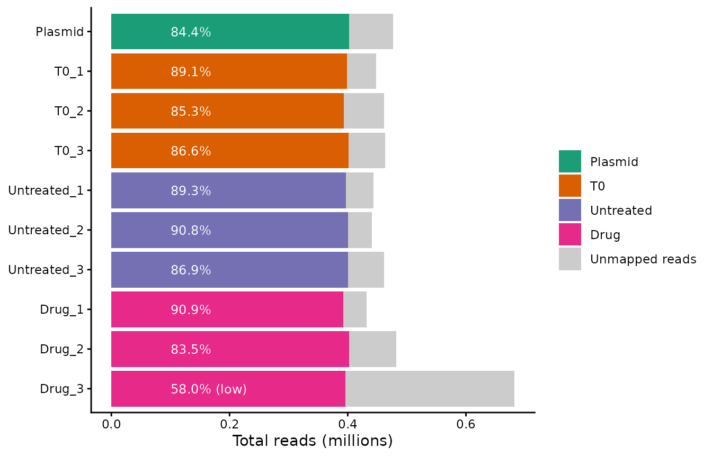
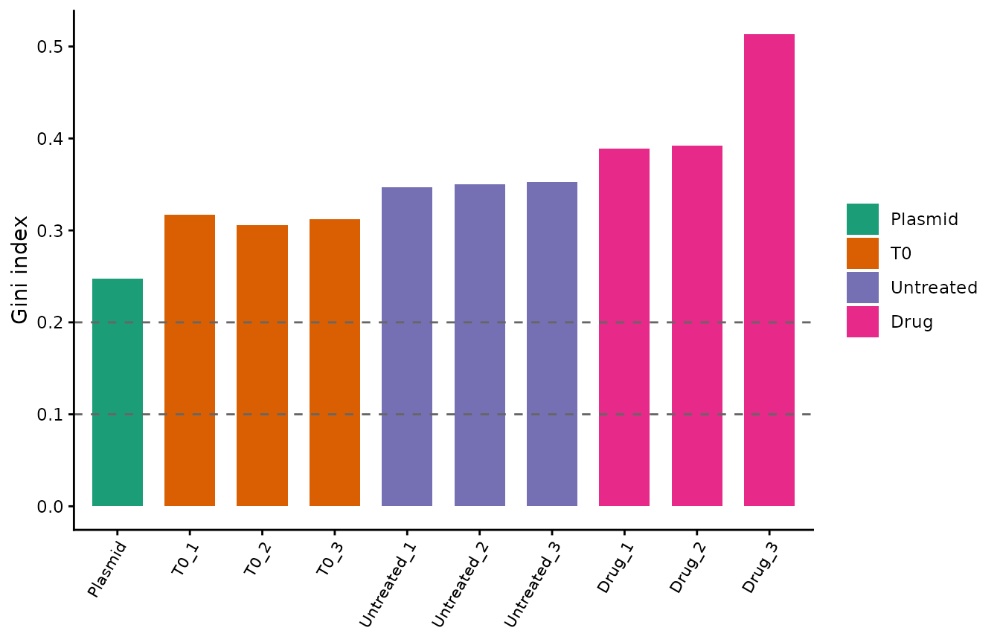
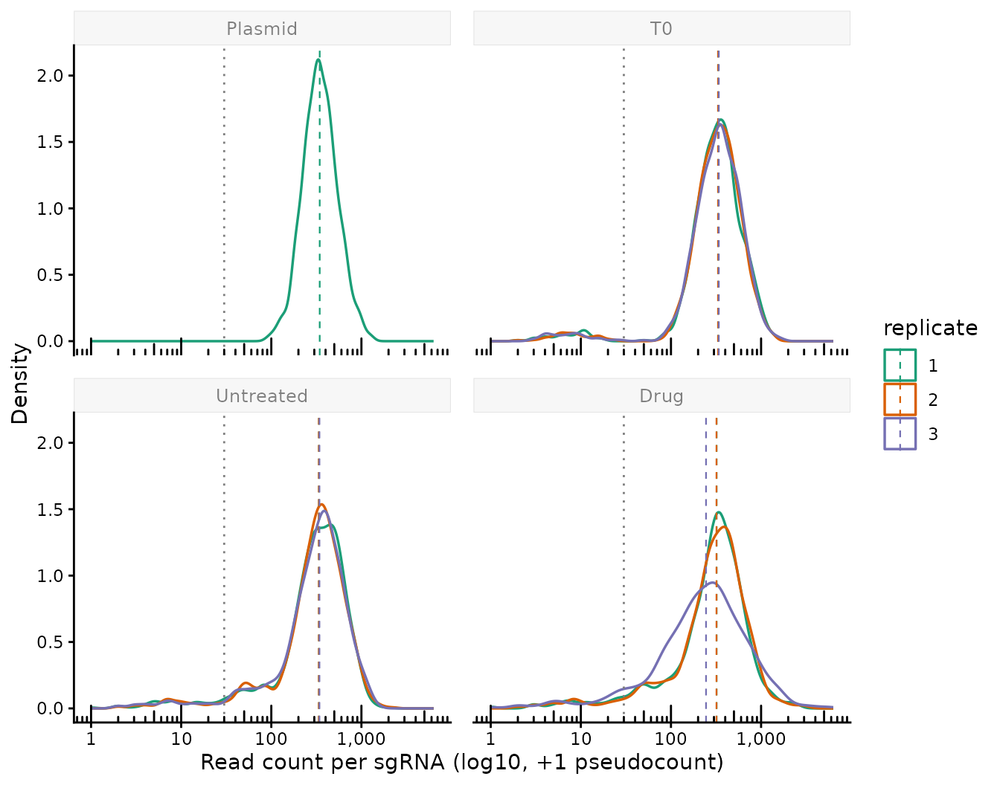
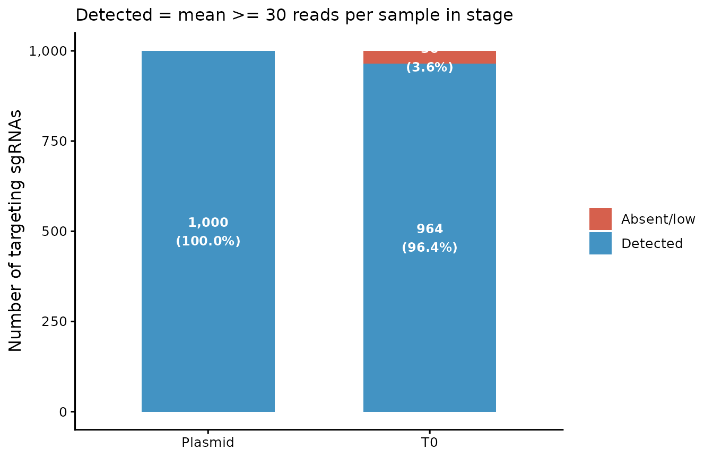
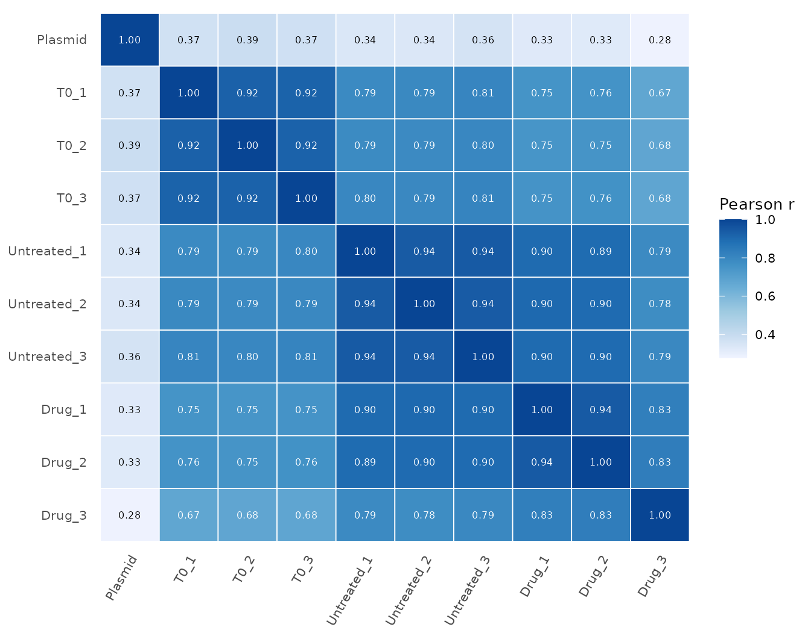
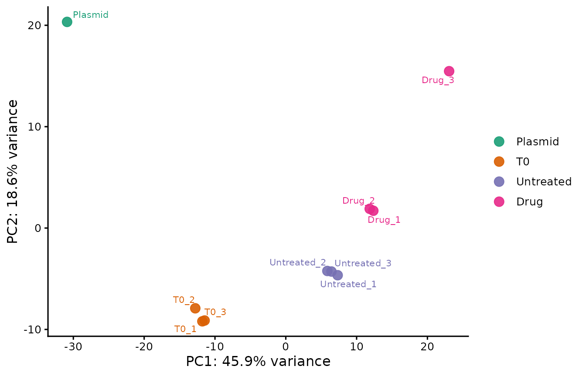
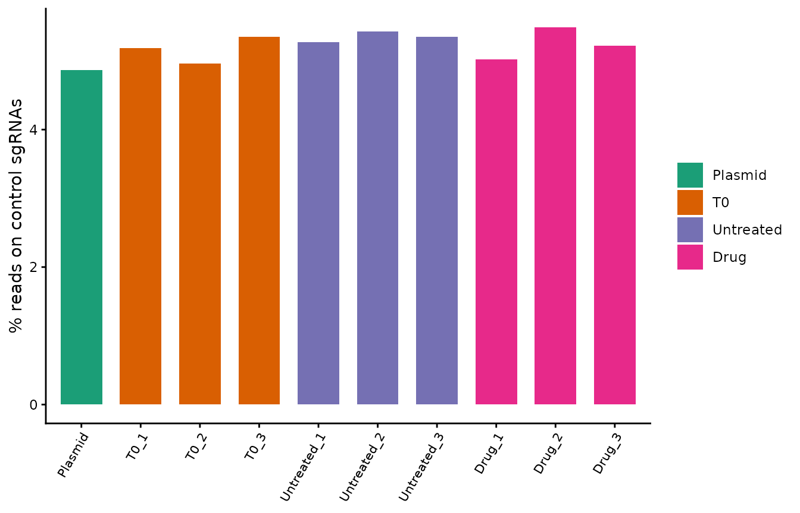
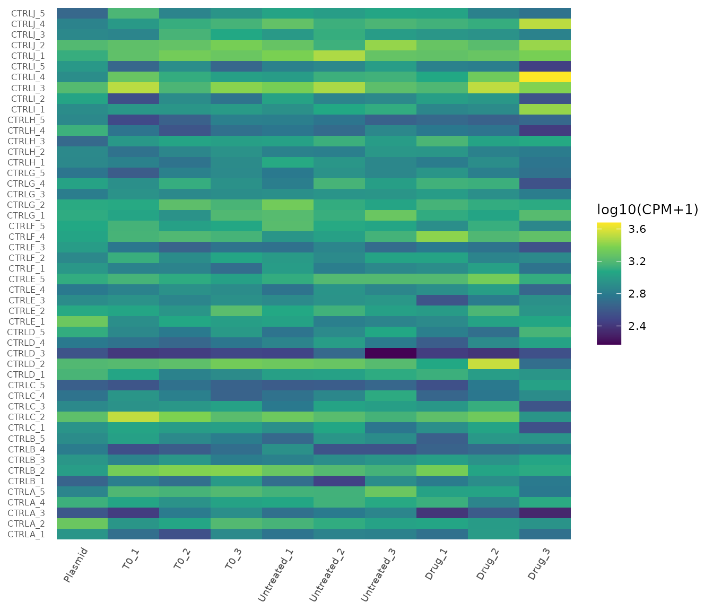
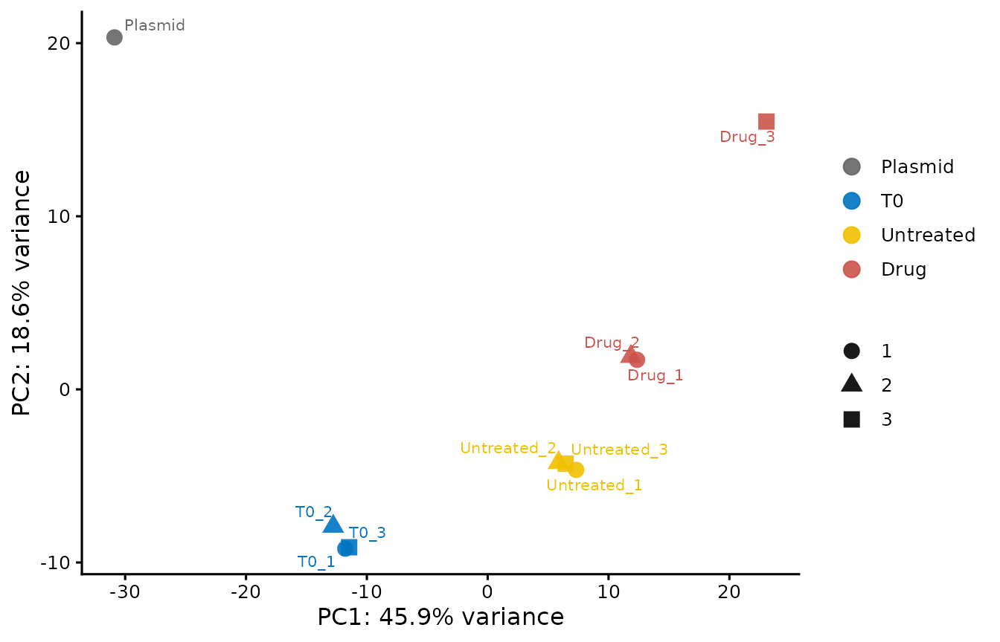

This vignette walks through quality control (QC) of a pooled CRISPR
screen with the qc_* functions in crisprFlow. It uses a
small simulated screen shipped with the package, but the same steps
apply to real count data.
Inputs
The QC functions work from two tables, described in detail in
?qc_inputs.
The count matrix (counts) has one row
per sgRNA, the columns sgRNA and Gene, and one
column of raw counts per sample. This is the layout written by MAGeCK
and guide-counter.
counts <- exampleCounts
head(counts)
#> sgRNA Gene Plasmid T0_1 T0_2 T0_3 Untreated_1 Untreated_2 Untreated_3 Drug_1
#> 1 AAK1_1 AAK1 227 192 236 201 193 227 412 178
#> 2 AAK1_2 AAK1 299 251 261 336 220 353 270 241
#> 3 AAK1_3 AAK1 224 125 146 185 164 194 219 200
#> 4 AAK1_4 AAK1 548 479 430 703 557 544 376 350
#> 5 AAK1_5 AAK1 183 201 158 171 221 267 152 141
#> 6 ABL2_1 ABL2 658 434 481 551 786 724 773 518
#> Drug_2 Drug_3
#> 1 193 287
#> 2 199 88
#> 3 220 103
#> 4 391 292
#> 5 171 103
#> 6 765 195The sample table (meta) has one row per
sample, and links each count column (sample_id) to a
display label, a biological group and a
replicate. The row order sets the order of samples in all
plots, and the levels of group (if it is a factor) set the
order of groups. Any extra columns, like day here, can be
used to colour or split plots.
meta <- exampleSampleMeta
meta
#> sample_id label group replicate day
#> 1 Plasmid Plasmid Plasmid 1 0
#> 2 T0_1 T0_1 T0 1 2
#> 3 T0_2 T0_2 T0 2 2
#> 4 T0_3 T0_3 T0 3 2
#> 5 Untreated_1 Untreated_1 Untreated 1 9
#> 6 Untreated_2 Untreated_2 Untreated 2 9
#> 7 Untreated_3 Untreated_3 Untreated 3 9
#> 8 Drug_1 Drug_1 Drug 1 9
#> 9 Drug_2 Drug_2 Drug 2 9
#> 10 Drug_3 Drug_3 Drug 3 9The example screen has a plasmid sample, and T0 (day 2), untreated
and drug-treated (day 9) samples in triplicate.
qc_check_meta() confirms that the sample table has the
required columns and matches the count matrix:
qc_check_meta(meta, counts)The count summary (summary_df) holds
the number of sequenced and mapped reads per sample:
summary_df <- exampleCountSummary
summary_df
#> sample_id total_reads mapped percentage total_sgrnas zero_counts
#> 1 Plasmid 476853 402626 0.844 1050 0
#> 2 T0_1 447673 398709 0.891 1050 0
#> 3 T0_2 461331 393451 0.853 1050 0
#> 4 T0_3 463521 401478 0.866 1050 0
#> 5 Untreated_1 443841 396544 0.893 1050 1
#> 6 Untreated_2 440666 400334 0.908 1050 0
#> 7 Untreated_3 461077 400652 0.869 1050 0
#> 8 Drug_1 431876 392594 0.909 1050 2
#> 9 Drug_2 482174 402617 0.835 1050 0
#> 10 Drug_3 682307 395738 0.580 1050 2
#> gini_index
#> 1 0.2478
#> 2 0.3167
#> 3 0.3057
#> 4 0.3122
#> 5 0.3468
#> 6 0.3502
#> 7 0.3524
#> 8 0.3887
#> 9 0.3918
#> 10 0.5131Reading your own data
For a real screen, the counts and summaries come from the counting
functions (e.g. count_sgRNA_guidecounter_fastq()), which
write one <sample>.count.txt and one
<sample>.countsummary.txt file per sample. Read and
merge them with
counts <- qc_read_count_dir("path/to/counts")
summary_df <- qc_read_summary_dir("path/to/counts")The sample table is typically kept as a CSV file next to the data, e.g.
Were the counts generated against the right library?
Every metric below assumes that the counts and the library refer to
the same sgRNAs. qc_check_library_concordance() compares
sgRNA IDs in the counts with those of a library, by name for libraries
shipped with crisprFlow, or from a file (library_file). The
example data contain only a subset of the CHIP1 library, so most library
sgRNAs are missing from the counts here:
qc_check_library_concordance(counts, qc_read_library("CHIP1"))
#> # A tibble: 1 × 6
#> n_library_guides n_count_guides n_shared frac_library_in_counts
#> <int> <int> <int> <dbl>
#> 1 11985 1050 1050 0.0876
#> # ℹ 2 more variables: frac_counts_in_library <dbl>, concordant <lgl>Did reads map to the library?
The fraction of reads assigned to a library sgRNA should be
consistently high; MAGeCK-VISPR uses 65% as the minimum. Low rates point
to the wrong library, primer or stagger trimming problems, or
contamination. Samples below min_pct_mapped are marked
“(low)”:
qc_plot_read_mapping(summary_df, meta, interactive = FALSE)
Drug_3 has a low mapping rate.
Most plotting functions return an interactive plotly plot by default
(interactive = TRUE), which is convenient in HTML reports;
this vignette uses static plots.
Is library representation deep and even?
qc_sample_stats() computes per-sample metrics from the
counts: the number of targeting sgRNAs with zero or few reads, the
median count and the share of reads on control sgRNAs.
sample_stats <- qc_sample_stats(counts, meta, low_threshold = 30)
sample_stats
#> # A tibble: 10 × 6
#> sample_id assigned n_zero n_low median_count pct_ctrl
#> <chr> <int> <int> <int> <dbl> <dbl>
#> 1 Plasmid 402626 0 0 344. 4.86
#> 2 T0_1 398709 0 36 333 5.19
#> 3 T0_2 393451 0 36 332. 4.96
#> 4 T0_3 401478 0 36 338. 5.35
#> 5 Untreated_1 396544 1 46 337 5.27
#> 6 Untreated_2 400334 0 43 336. 5.43
#> 7 Untreated_3 400652 0 43 341 5.35
#> 8 Drug_1 392594 2 53 320 5.02
#> 9 Drug_2 402617 0 48 319 5.48
#> 10 Drug_3 395738 2 71 244 5.22Any per-sample metric can be plotted with
qc_plot_sample_metric(). The Gini index measures how
unevenly reads are spread over sgRNAs; typical thresholds are 0.1 for
early and 0.2 for late samples:
qc_plot_sample_metric(summary_df, meta, value = "gini_index",
y_label = "Gini index", thresholds = c(0.1, 0.2),
interactive = FALSE)
The count distributions show the same from another angle: in each group, the replicates’ distributions should be narrow and overlap. The dotted line marks the low-count threshold, dashed lines the medians:
qc_plot_count_distribution(counts, meta, low_threshold = 30)
The Drug_3 distribution is broader than those of its
replicates.
Was the library lost before selection?
A bottleneck at transduction or early in culture leaves some sgRNAs
under-represented before selection starts.
qc_guide_representation() calls each sgRNA detected or not
at the stages you define, pooling the samples of each stage:
rep_data <- qc_guide_representation(
counts,
stages = list(Plasmid = "Plasmid", T0 = c("T0_1", "T0_2", "T0_3")),
min_reads = 30)
qc_plot_guide_detection(rep_data)
Genes that lost several of their sgRNAs rest on fewer sgRNAs in the hit analysis, so their results deserve more caution:
qc_genes_with_lost_guides(rep_data, stage = "T0", min_frac = 0.4)
#> # A tibble: 5 × 6
#> stage Gene n_guides n_detected n_lost frac_lost
#> <fct> <chr> <int> <int> <int> <dbl>
#> 1 T0 AKAP1 5 3 2 0.4
#> 2 T0 EDNRB 5 3 2 0.4
#> 3 T0 FTSJ3 5 3 2 0.4
#> 4 T0 MDM4 5 3 2 0.4
#> 5 T0 MERTK 5 3 2 0.4Do replicates agree?
Replicates should correlate more strongly with each other than with other groups. Correlations are computed on log2(CPM + 1) of targeting sgRNAs:
qc_plot_replicate_correlation(counts, meta, interactive = FALSE)
qc_replicate_correlation_table() summarises the
correlations within each group:
qc_replicate_correlation_table(counts, meta)
#> # A tibble: 3 × 4
#> group n_reps min_r mean_r
#> <fct> <int> <dbl> <dbl>
#> 1 T0 3 0.919 0.920
#> 2 Untreated 3 0.939 0.941
#> 3 Drug 3 0.830 0.868The PCA gives the same picture; samples should cluster by group:
qc_plot_pca(counts, meta, interactive = FALSE)
Both point to Drug_3 as an outlier, which also had a low
mapping rate and a broad count distribution: a candidate for exclusion
or re-sequencing.
Are control sgRNAs stable?
Control sgRNAs should be phenotypically neutral, so their share of reads should be stable across samples. A systematic shift between conditions indicates normalization problems or selection on the controls themselves:
qc_plot_sample_metric(sample_stats, meta, value = "pct_ctrl",
y_label = "% reads on control sgRNAs",
interactive = FALSE)
The heatmap shows each control sgRNA in each sample, so missing or outlier controls stand out:
qc_plot_control_guides(counts, meta, interactive = FALSE)
Controls are recognised by the ctrl_pattern argument
(default "NEG_CTRL"), which matches the control genes of
all libraries shipped with crisprFlow
(e.g. NONE_TARGETING_NEG_CTRL and
CTRLA_NEG_CTRL).
Customising plots
-
colour_by,facet_byandshape_bytake any column of the sample table, e.g.facet_by = "day". -
colourstakes a named vector of colours for the values of thecolour_bycolumn. - Static plots are ggplot objects and can be modified further with ggplot2.
- The font is set with
options(crisprFlow.font = "Arial").
qc_plot_pca(counts, meta, colour_by = "group", shape_by = "replicate",
colours = c(Plasmid = "grey40", T0 = "#0073C2",
Untreated = "#EFC000", Drug = "#CD534C"),
interactive = FALSE)